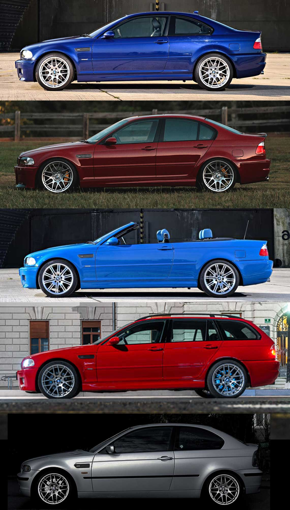

A patra generație (E46; 1997)
A patra generație a gamei de mașini executive compacte BMW Seria 3 este desemnată sub codul modelului E46, care a fost produsă de producătorul German de automobile BMW din 1997 până în 2006 și a fost succesorul seriei 3 E36, care a încetat producția în 2000. Introdus pentru prima dată în noiembrie 1997, E46 a fost disponibil în modele de caroserie sedan, coupe, cabriolet, station wagon și hatchback. Acesta din urmă a fost comercializat ca seria 3 compact.
Gama E46 a fost eliminată treptat începând cu sfârșitul anului 2004, după introducerea sedanelor din seria E90 3. Cu toate acestea, modelele E46 coupe și cabriolet au rămas în producție până în August 2006.
Dezvoltarea
În 1993, programul de dezvoltare pentru E46 a început sub conducerea inginerului șef Wolfgang Ziebart și a șefului Departamentului de cercetare și dezvoltare Wolfgang Reitzle. La sfârșitul anului 1993, lucrările de proiectare au început sub conducerea designerului șef Chris Bangle și au continuat în 1995.
În Mai 1995, designul exterior general al modelului E46 de Erik Goplen de la DesignworksUSA a fost aprobat și, ca urmare, DesignworksUSA a fost contractat de BMW pentru a lucra alături de echipa de design internă a BMW Group pentru a crea caroseria exterioară pentru gama Seria 3 în februarie 1996. Echipa de proiectare a pus accentul pe îmbunătățirea aerodinamicii și creșterea poziției agresive a mașinii. Brevetele de proiectare au fost depuse în Germania la 16 iulie 1997 și în SUA la 16 ianuarie 1998.
Chris Bangle și Wolfgang Reitzle au fost responsabili până în 1995 pentru exteriorul sedanului de producție, după cum reiese din brevetul de proiectare din 1997. Dezvoltarea producției sedanului a durat 24 de luni după înghețarea designului și a durat 31 de luni de la aprobarea stilului consiliului executiv în 1995 până la începerea producției în serie în decembrie 1997. Erik Goplen a proiectat modelele de producție coupe, decapotabil și break în perioada 1996-1997. Sedanul E46 a fost dezvăluit printr-un comunicat de presă la 11 noiembrie 1997 și a fost lansat pe piață la sfârșitul lunii aprilie 1998 cu livrări către clienți.
Șasiul
Caroseria E46 a fost declarată de BMW ca fiind cu 70% mai rigidă decât predecesorul său E36. Aluminiul a fost utilizat pentru o cantitate mai mare de componente de suspensie, pentru a reduce masa nesuspendată. Cu toate acestea, cu o greutate la bord de 1.450 kg (3.197 lb), E46 328ci este cu 55 kg (121 lb) mai greu decât echivalentul E36.
În ton cu valorile de bază ale BMW în ceea ce privește dinamica manevrabilității, E46 a fost disponibil inițial cu un aspect cu tracțiune spate și o distribuție a greutății 50/50. Tracțiunea integrală, care a fost disponibilă ultima dată în Seria 3 în 1991, a fost reintrodusă pentru E46 pe modelele 325xi, 330xi și 330xd.
Electronica
Componentele electronice din E46 sunt mai integrate decât generațiile anterioare din seria 3, inclusiv utilizarea unui sistem de magistrală CAN. Informațiile privind transmisia (cum ar fi motorul, transmisia și controlul stabilității) sunt comunicate cu ajutorul magistralei CAN. Ccomponentele electronice ale vehiculului (cum ar fi radioul, navigația, televiziunea și telecomunicațiile) pot comunica între ele prin intermediul magistralei K.
E46 a fost prima serie 3 care a fost disponibilă cu un motor care utilizează Valvetronic (variable valve lift). Diverse caracteristici electronice au fost, de asemenea, introduse în Seria 3 din generația E46, inclusiv navigația prin satelit, distribuția electronică a forței de frânare, ștergătoarele cu senzor de ploaie și stopurile LED.
Stiluri de caroserie

- Coupe cu 2 uși, produs din decembrie 1998 până în mai 2006.
- Sedan cu 4 uși, produs din decembrie 1997 până în mai 2005.
- Decapotabilă cu 2 uși, produs din decembrie 1999 până în noiembrie 2006.
- Wagon/estate cu 5 uși (comercializat ca Seria 3 Touring), produs din ianuarie 1999 până în mai 2005.
- Hatchback cu 3 uși (comercializat ca Seria 3 Compact), produs din aprilie 2000 până în decembrie 2004.
Producția
E46 a fost produs în Germania (Leipzig, Munchen și Regensburg) și în Africa de Sud (Rosslyn). Asamblarea locală a kiturilor complete (CKD) a fost utilizată pentru mașinile vândute în China, Egipt, Indonezia, Malaezia, Mexic, Thailanda și Rusia. Cel mai bine vândut an pentru șasiul E46 a fost 2002, când 561.249 de vehicule au fost vândute în întreaga lume.